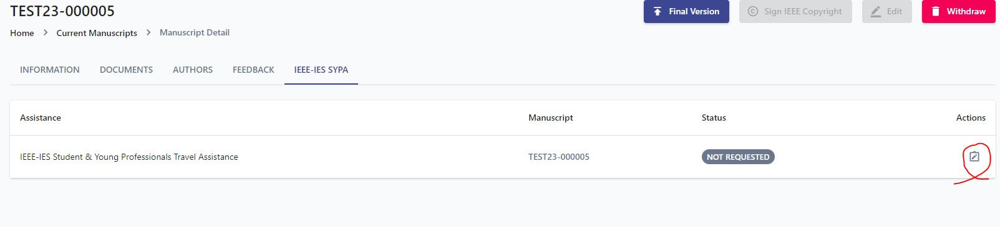
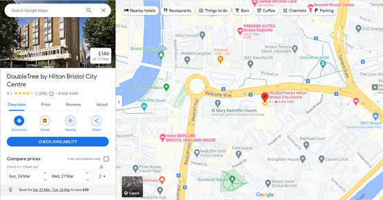
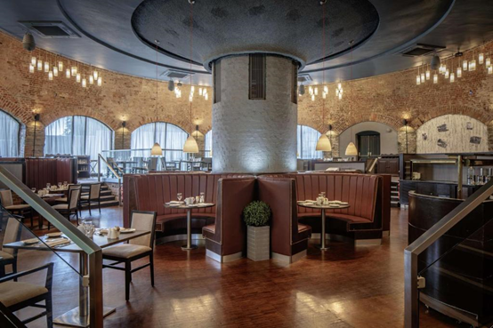
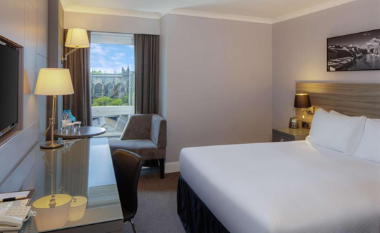
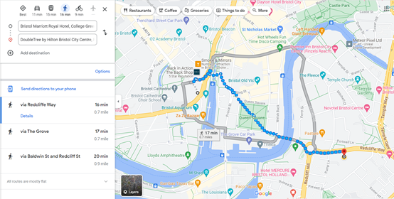
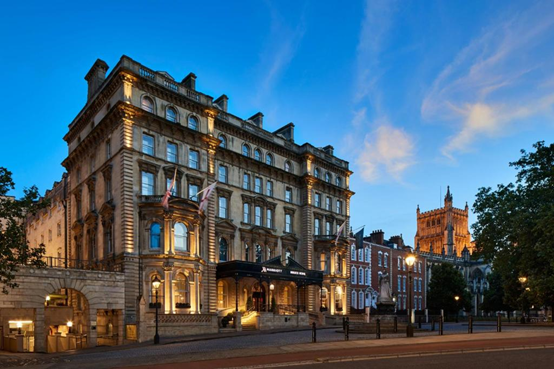
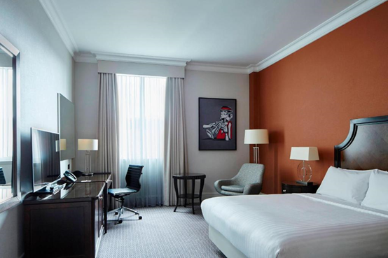
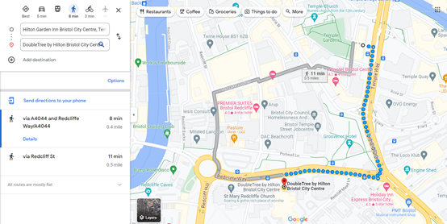
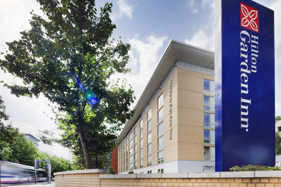
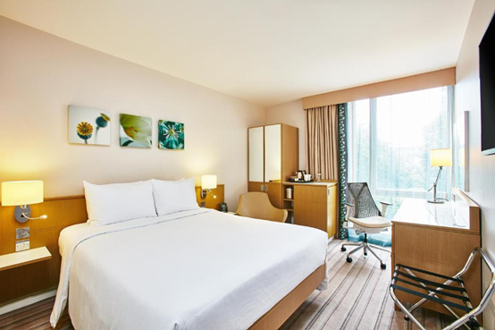

IEEE IES STUDENTS AND YOUNG PROFESSIONALS PAPER ASSISTANCE PROGRAM (IES-SYPA) and SYP FORUM
The Student & Young Professionals (S&YP) Activity Committee of the Industrial Electronics Society (IES) is continuously implementing a paper assistance program (IES-SYPA) – a competition-based financial support for the IES S&YP members to attend IES Majority Sponsored Conferences. For the ICIT’2024 we allocated 6 SYPA’s up to 1500 USD each, which can be used to cover the transportation costs to the venue city and back using the most economical means of transportation, participation fee and accommodation in a hotel not higher than 3-star class.
Moreover, during the conference we will organize a SYP forum – a special event aimed at helping students and young professional members stay connected in the IES community. SYP forum will provide a unique opportunity to ask questions and get professional advice directly from IEEE Fellows, the IES President, AdCom members, and experienced colleagues. The program of a SYP forum will include a series of keynote speeches by the leaders of academia and industry, a 3M video session, and an open discussion between the participants. We encourage all conference participants to join!
• How to Apply for IES-SYPA
You MUST be an IEEE member. Whether Student, Graduate Student or Young Professional (YP). You are considered YP up to 15 years after your graduation.
You MUST be a member of the IEEE Industrial Electronics Society.
You MUST reside outside the city in which the conference is held.
Your paper should be fully registered.
You SHOULD NOT have received the SYPA in the last 2 years.
In the submission system, if you toggled the correct membership (Student or YP), the “IEEE-IES SYPA” tab will appear once the paper is accepted. Click on that and submit the required information/document/video.
You MUST prepare a video and send it according to the following rules:
The length MUST be 3 minutes. Even 1 second more or less is not tolerated.
Avoid using PowerPoint slides for most of the video. Only up to 30% of the video (1min) can be from the presentation slides. Be creative and generate interactive content! Watch more videos to get ideas.
Some seconds MUST be devoted to the paper information such as title, authors, affiliations, your university, company, research team, etc.
At least the last 5 seconds MUST contain the Acknowledgment to IEEE IES for the IES-SYPA!
The video MUST be shared through sharing websites like Dropbox, Google Drive, OneDrive, etc. Make sure to provide the link without requiring permission (MUST be viewable to anyone who has the link)
Once your paper is accepted, the IEEE-IES SYPA tab will appear, and you can apply for it as:
Ensure you have turned on the required membership options in your profile at the top-right corner of the submission system. You should be an IEEE and IES member and also a Student or Young Professional.
For any questions regarding the SYPA application submission issues, please contact the conference support team directly at conferences@ieee-ies.org
• Review Process
The committee members will review videos in 2 rounds. All applicants will be given one chance to update their videos according to the 1st-round comments. Then, the final video will be reviewed in 2nd-round and receive an average score based on its impact, creativity, style, presentation, video quality, etc. The ones with the highest scores from both paper and video reviewers will be selected as the winners of the IES-SYPA. They will receive financial support for travel expenses and a diploma during the Gala dinner.
The winners’ videos will be uploaded on the IES YouTube Channel, and you will receive an email including the link to your video on the IES YouTube Channel. You should copy that link to the IES Facebook Event page of the conference and wait for the thumbnail to appear, then post it!
Moreover, you should similarly post the link of your video to the IEEE Collabratec. You are also allowed to share it on any other websites. The direct link to the Facebook event page and IEEE Collabratec Group will be sent in the same email and will be available on the conference website.
• Timeline
IES SYPA Application submission deadline: 05/02/2024, 22:00 GMT-4.
1st-round general comments on the videos will be sent by 11/02/2024
Submission of the final 3-minute video: 18/02/2024, 22:00 GMT-4
Announcement of winners: 25/02/2024
• To Receive the Travel Assistance
1- You MUST be on the list of final SYPA recipients.
2- You MUST attend the conference and give 3-minute speech during the 3-Min Video Session.
DO NOT FORGET to bring your video file to the 3M Video Session. The videos will be displayed on a large screen, and you will talk to the audience for 3 minutes. So, your speech should be very brief and informative.
All information (including the place, date, and time) for the 3M Video Session and the ceremony to receive the Diplomas will be announced by the first day of the conference.
The fund can cover your expenses, including conference registration, transportation, and accommodation. So, keep your receipts and use the Concur platform to submit the expenses and other required information. All instructions can be found on the SYPA page of the conference.
It should be noted that if many applicants have obtained a high score, the committee can reduce the travel assistance amount to 1000 USD per applicant. This exceptional measure is to support the travel of a higher number of excellent applicants.
• Some tips to prepare your video
1. The 3M video session aims to help researchers/engineers (students and young professionals) learn how to advertise their projects to the public and promote the authors. Whether your work is theoretical or by simulations, you are expected to prepare the movie as interactive, live, and interesting for the viewers. Record some minutes from running results in the software during simulation or practical tests.
2. Record some videos from your hardware design or even software results (e.g., the screen of your computer) while they are running. Or add some discussion with co-authors, research team, etc. At least 70% of your video should include interactive parts rather than solid slides.
3. It is recommended that you present the work with your own voice during the video recording. Please present it in a different way than a PowerPoint presentation. Your video will be placed on the IES YouTube Channel and should attract viewers.
4. Showing some information on the video using simple texts as subtitles is also recommended. Note that the voice is helpful for YouTube viewers; however, during the conference, it will be replaced by your 3M speech. The video may be displayed without sound during the S&YP 3-Min Video Session.
5. Sometimes, background music could make your video much more enjoyable.
6. The audience already saw your paper presentations, so be different in your videos.
7. Try to make people interested in your videos. Devote some seconds of the video to your office, lab, or any place you work in and show the stuff you use for that project, introduce co-authors and supervisors, explain motivation, etc.
8. The 3M video does not need to show the details of your work. Some concepts are enough to attract people’s attention. Deep theoretic and mathematics are useless for advertising your project to people with different interests.
9. Note that the video should be impressive and interactive. Static pictures interest only some. Find gifs or flash images from the Internet.
10. Ensure you have the copyright for materials used in your video, including animations, songs, photos, etc.
You can watch a good example of a 3Min video recorded at MIT here.
https://www.youtube.com/watch?v=inX07rt1kgU
Take a look at other videos posted by young researchers (young professionals and students) for the IES-SYPA at the following links:
https://www.youtube.com/watch?v=WJf6z_1eTqY
https://www.youtube.com/watch?v=G9-Tb0H1soU
https://www.facebook.com/appa.rao.750/videos/10154015783559666/
Recommended hotels:
1. DoubleTree by Hilton Bristol City Centre [Organizer's Recommendation*]
Note: The hotel has made a special offer for this conference, with two room types for attendees to choose from. This program is for attendees' reference, and attendees can also reserve rooms through other channels. For details, please check the link.
Address: Redcliffe Way, Bristol, BS1 6NJ, United Kingdom
Distance from the venue: This hotel is the conference venue.
Hotel Description:
Just 5 minutes' walk from Temple Meads Rail Station, this 4-star hotel offers modern en-suite rooms with a flat-screen satellite TV and free WiFi available throughout. It also has a restaurant and health club. Guests can enjoy a complimentary cookie on arrival.
Each room has a private bathroom with rainfall shower, complimentary toiletries and a hair dryer.
The restaurant at DoubleTree by Hilton Bristol City Centre is inside the remains of a 17th-century glass-blowing kiln. The lounge offers a range of hot and cold food, and room service is available 24 hours a day. A cooked breakfast is available in the morning.
The onsite fitness centre offers 24-hour access to gym facilities. There are also 12 meeting rooms including a conference facility.
This DoubleTree by Hilton hotel is close to the centre of Bristol, with its many bars and cafés. The Cabot Circus shopping district is within 15 minutes' walk, and there is an airport bus stop located outside the hotel. Bristol Zoo is a 15-minute drive away.
 2. Bristol Marriott Royal Hotel
Address: College Green, Bristol, BS1 5TA, United Kingdom
Distance from the venue: Approximately 0.7 miles and a 16-minute walk to the venue.
Hotel Description:
This Victorian-style hotel has a fabulous location next to Bristol Cathedral and the historic waterfront. It features an on-site gym and a choice of restaurants. Guests get unlimited free WiFi in the public areas.
Some rooms at the Bristol Marriott Royal Hotel have views of the river, while others have views of College Green or Bristol Cathedral. Each also has satellite TV and tea and coffee facilities.
Guests can enjoy breakfast, lunch or dinner at hotel's on-site restaurant, Miller & Carter. Choose from an indulgent menu bursting with 30 day aged British and Irish beef steaks, heavenly fish dishes, and the finest burgers. Guests can also enjoy cocktails, an extensive wine and beer list at the Bar.
After a long day exploring Bristol and beyond, guests can enjoy a workout in the gym.
Bristol is known for its arts scene, and a number of museums and galleries can be reached within 10 minutes' walk.
 3. Hilton Garden Inn Bristol City Centre
Address: Temple Way, Temple, Bristol, BS1 6BF, United Kingdom
Distance from the venue: Approximately 0.4 miles and a 8-minute walk to the venue.
Hotel Description:
In the heart of Bristol city centre, Hilton Garden Inn Bristol City Centre is just 2 minutes' walk from Bristol Temple Meads Rail Station. It provides a modern gym, free WiFi and a 42-inch flat-screen TV in each room.
The rooms at Hilton Garden Inn Bristol are bright, feature sleek décor and each room has floor-to-ceiling windows with many having park views.
The hotel also boasts a cosy lounge bar and restaurant called Recess, which offers award-winning modern European cuisine. There is a stylish terrace overlooking Temple Gardens for relaxed al fresco dining. Continental and Full English breakfast options are available each morning at the property.
Printing and photocopying services are also available. Guests can also use the onsite launderette.
Hilton Garden Inn Bristol City Centre is just over a mile from the Bristol Museum and Art Gallery. The Broadmead Shopping Centre and many of Bristol's bars and theatres are within 10 minutes' walk.
 